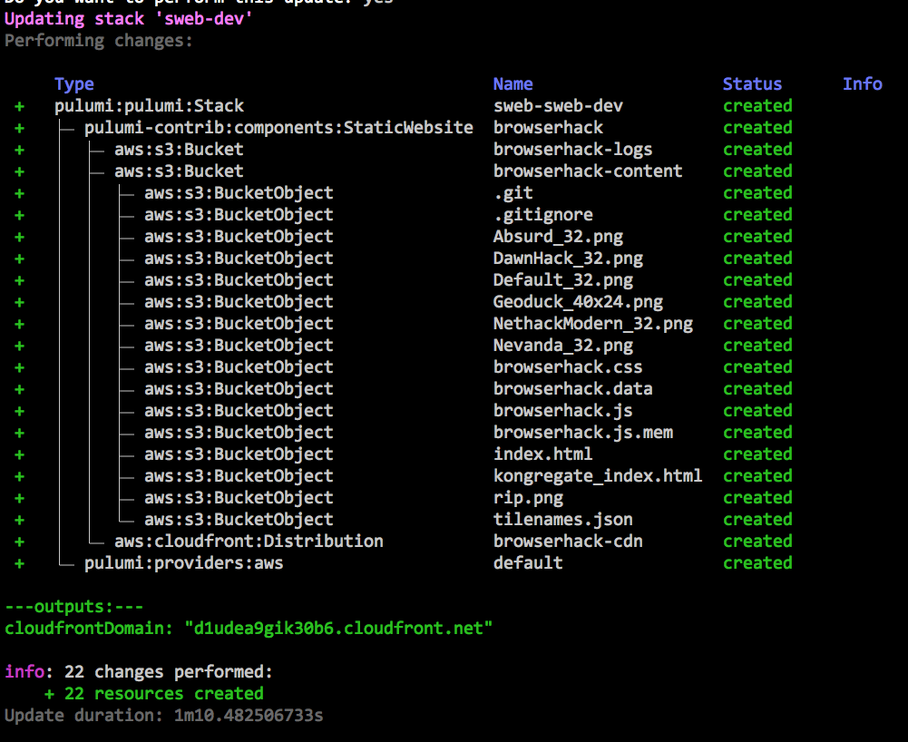
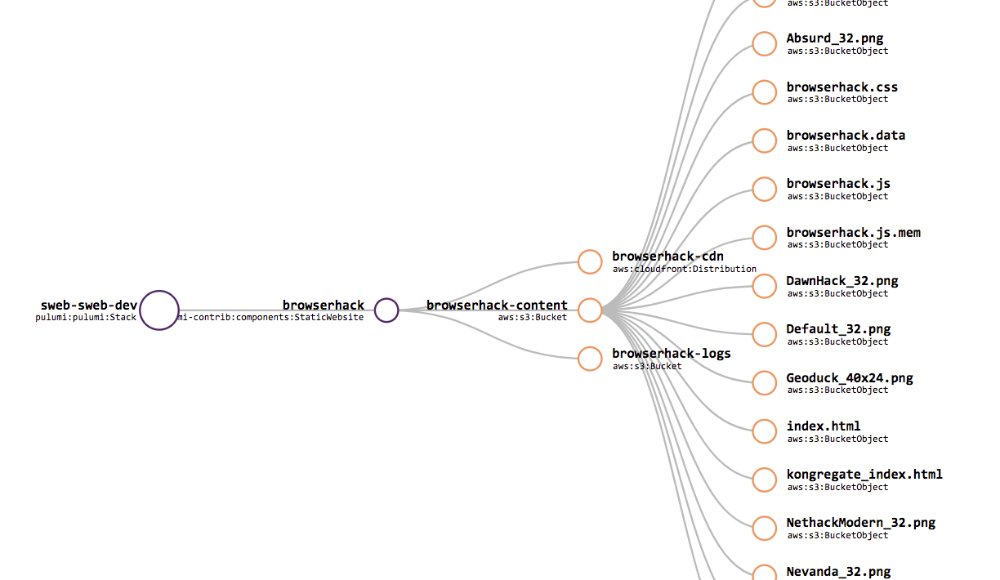

Creating and Reusing Cloud Components using Package Managers

Hello! A few weeks back I wrote a post on [serving static websites on AWS with Pulumi]/blog/serving-a-static-website-on-aws-with-pulumi/) detailing how to host a static website on AWS. Pulumi allowed me to wire four different AWS products together in only 200 lines of code. It would be a shame, however if I needed to copy and paste that code every time I wanted to to stand up a new website. Instead, we can package up, share, and reuse our code just like any other Node.js library. It just so happens that this one can be used to create cloud infrastructure.
Creating a Package
To create a reusable package for the static website example, I simply put the code into a new GitHub repo and publish it to NPM. We’ll walk through exactly how to do that below, but afterwards anyone who wants to stand up a static website on AWS can just reuse that package.
The static-website-aws package exports a StaticWebsite class, which
is a logical, reusable cloud “component” resource. This class offers a
simple constructor that internally does all of the hard work of creating
the assortment of AWS cloud resources in the prior blog post – an S3
Bucket and objects per piece of static content, CloudFront Distribution,
and Route53 DNS A-Record – and exposes them afterwards as readonly
properties:
/**
* Static website using Amazon S3, CloudFront, and Route53.
*/
export declare class StaticWebsite extends pulumi.ComponentResource {
readonly contentBucket: aws.s3.Bucket;
readonly logsBucket: aws.s3.Bucket;
readonly cdn: aws.cloudfront.Distribution;
readonly aRecord?: aws.route53.Record;
/**
* Creates a new static website hosted on AWS.
* @param name The _unique_ name of the resource.
* @param contentArgs The arguments to configure the content being served.
* @param domainArgs The arguments to configure the domain and DNS settings.
* @param opts A bag of options that control this resource's behavior.
*/
constructor(name: string , contentArgs: ContentArgs,
domainArgs?: DomainArgs, opts?: pulumi.ResourceOptions);
}This class is placed into an NPM package as usual, including a package.json file that gives it a name and a version. After doing this, we can publish it to NPM simply by running
$ npm publishAll the complexities of creating, configuring, and wiring up the
necessary AWS resources – admittedly only 200 lines of code, but still
intricate – has now been hidden beneath an ultra-simple component
resource named StaticWebsite.
That’s how you create a new package. The great thing about packages, however, is that you define them once and then use them a lot. So now let’s turn to see see how standing up a new CDN-backed website can now become just a few lines of very simple, understandable code.
Reusing Infrastructure as Code
To use this new package, head on over to a Pulumi program, or
create a new one
(for instance, with pulumi new aws-typescript).
Then just add a reference like any other dependency:
$ npm install static-website-aws
At that point, we can import our StaticWebsite class from the
static-website-aws package like usual in Node.js programs, either
using require
let swa = require("static-website-aws");
or using the new ES6 module import syntax, supported by TypeScript and modern JavaScript
import { StaticWebsite } from "static-website-aws";
Afterwards, we’ll just new up a StaticWebsite object, which
internally creates everything for us. Of course, to create a useful
website, we’ll need to supply some interesting parameters . In this
case, let’s just pass a path to the content on disk (which will
automatically get uploaded into S3 objects during a pulumi up) in
addition to a path to a custom 404 HTML page:
import { StaticWebsite } from "static-website-aws";
const website = new StaticWebsite ("browserhack", {
pathToContent:"./browserhack",
custom404Path:"/404.html",
});
export let cloudfrontDomain = website .cdn .domainName ;
As soon as we have our program, we can stand it up with a single
pulumi up command:
$ pulumi upThis will show us the entire resource graph so that we can see what it’s creating internally and once it’s done the resulting domain name will be printed out:

Let’s then curl it to see whether it worked:
$ curl $(pulumi stack output cloudfrontDomain)`[<!doctype html>
]{style="color: red; font-family: Menlo, Monaco, Consolas, 'Courier New', monospace; font-size: 13px;"}[<!--
vim: set sw=2 ts=2 et : -->
]{style="color: red; font-family: Menlo, Monaco, Consolas, 'Courier New', monospace; font-size: 13px;"}[<html>
]{style="color: red; font-family: Menlo, Monaco, Consolas, 'Courier New', monospace; font-size: 13px;"}[
<head>
]{style="color: red; font-family: Menlo, Monaco, Consolas, 'Courier New', monospace; font-size: 13px;"}[...
etc, etc, etc
...]{style="color: red; font-family: Menlo, Monaco, Consolas, 'Courier New', monospace; font-size: 13px;"}
Huzzah! (Note that new CloudFront Domains can take a while to spin up; if you get an error “Could not resolve host: xxx.cloudfront.net”, just wait a little bit and try again.)
The full source code for this example is available at
chrsmith/browserhack-demo.
This program deploys an instance of BrowserHack
(a web-based port of the seminal console game NetHack).
The repo also includes an example of assigning a custom domain name and
ACM-managed SSL certificate,
useful capabilities supported by StaticWebsite but omitted here for
brevity .
Resource Components
We glossed over what components are earlier on. This is an advanced concept, so feel free to skip this section; but if you want to understand how components work under the hood, read on.
The StaticWebsite type extends pulumi.ComponentResource. A
ComponentResource is a Pulumi-managed resource that aggregates other
resources into a higher-level abstraction.
Pulumi will manage creating and updating the underlying resources like
normal, and you will see updates to them in the resource tree. The
difference is that by using the ComponentResource abstraction we can
present those resources as logically grouped into a new, static website
type.
This parent/child relationship between resources is declared using the
optional pulumi.ResourceOptions type passed to Pulumi resources.
Here’s a code snippet from the code, where we create the S3 bucket and
specify its logical parent resource. Every child resource created is
passed defaultResourceOptions, which sets the parent property to this
(the instance of StaticWebsite ).
// Default resource options for this component's child resources.
const defaultResourceOptions: pulumi.ResourceOptions = { parent:this };
...
// Create the logs bucket to store CloudFront request logs.
this.logsBucket = new aws.s3.Bucket(`${name }-logs`,
{ acl:"private" },
defaultResourceOptions,
);
Components are a powerful construct in Pulumi, and let you build larger first class resources out of smaller ones. There are other benefits, including seeing resource attribution in the CLI tree view, and the richer visualization in the pulumi.com console:

If you want to learn more about components, see the documentation.
Package Everything!
In this blog, you’ve seen how Pulumi’s code-centric approach to infrastructure can make you more productive programming the cloud. “Code” has a lot of advantages over static configuration languages, for example rich IDE support. Another big advantage of using code, however, is that it allows you to create useful abstractions that can be reused in other programs
With Pulumi being able to take advantage of existing package managers, it’s super easy to create high-quality reusable components. We demonstrated NPM here for Node.js programs, but Pulumi also supports PyPI for Python, and traditional library techniques for Go.
But don’t just take our words for it. Recently Mikhail Shilkov blogged about creating a Pulumi component to keep AWS Lambda functions warm. And James Nugent open sourced a component that creates a properly subnetted AWS VPC. This is a great way to encode and share best practices broadly. Over time, we look forward to seeing the many other battle-tested components the community creates for common cloud applications and infrastructure needs.
If you’ve created a Pulumi component that is useful or want some design advice, come and join us in the Pulumi Community Slack – we’d love to hear from you!
Posted on